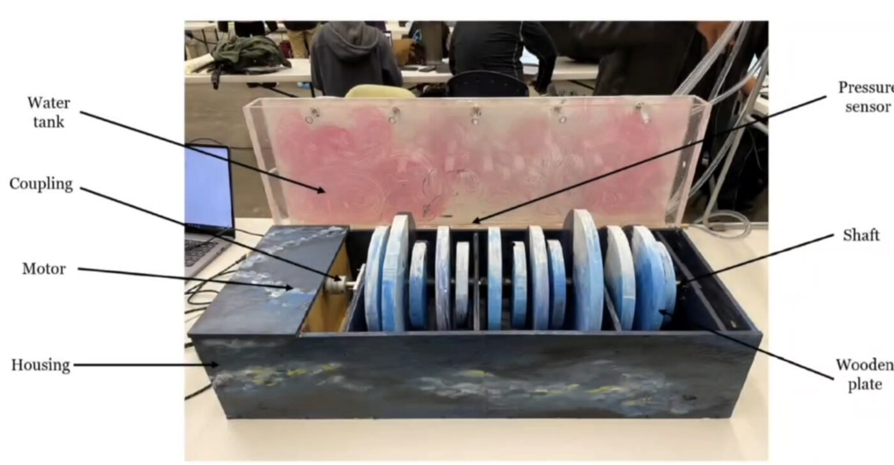
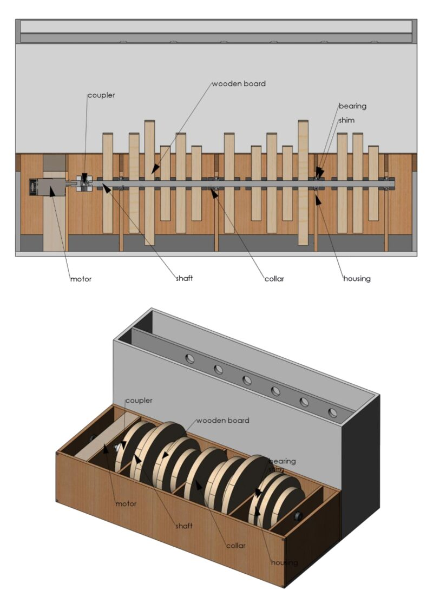
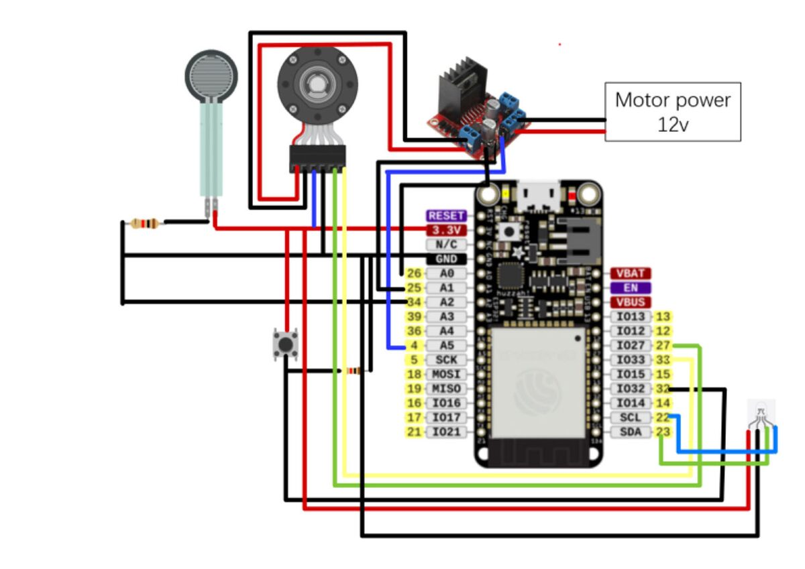
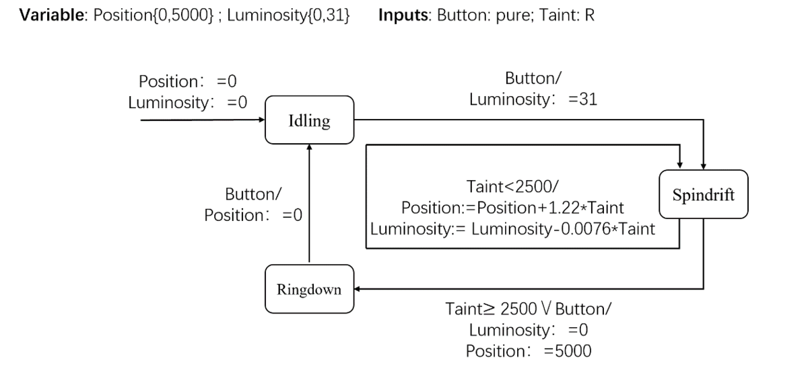

UC Berkeley · ME102B Mechatronics Design · December 2023
🏆 Second Prize, Mechatronics Design Social ImpactThe installation shows an ocean changing from clean to polluted. A row of rotating plates stands for the ocean, moving from lively to lifeless. Sewage enters a water tank through a pipe, and a water-lifting mechanism moves it while the motor adjusts to the weight of the water. As the front tank fills, holes in the tanks open and let the water flow back to be reused. LEDs stay on while the ocean is clean and switch off at the end of the cycle, when it is polluted.
The project combines engineering with art: smooth, accurate control based on haptic feedback, in service of an interactive piece about environmental impact.



